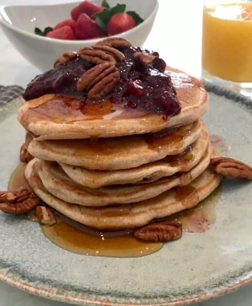

Recipe for Pancakes

Description
This is a recipe for pancakes
I prefer to make mine vegan
Ingredients
- 2 cups plant milk of choice
- 2 tablespoon apple cider vinegar
- 2 teaspoon vanilla extract
- 2 ¼ cups whole wheat flour
- 2 tablespoon baking powder
- ¼ teaspoon salt
- 2 tablespoon maple syrup
Steps
- First, add your 3 wet ingredients in a bowl and stir to combine.
The vinegar will curdle the milk slightly, giving you a quick
"buttermilk."
- In a seperate bowl, add your 3 dry ingredeints and stir to combine.
This step is important as it let's you evenly incorporate the baking
powder into the flour.
- Add your wet ingredients to your dry ingredients and whisk to
combine. Let rest 3 to 5 minutes. While you preheat a nonstick
skillet over medium.
- When the skillet is warm, add 3 x 4in circles of pancake batter to
the skillet. (If you use a ¼ measuring cup to transfer the batter to
the skillet, this is a little less than a full ¼ cup.)
- Let the pancakes cook until they begin to bubble and the edges start
to crisp. When the underside has turned a golden brown color,
flip over and cook on the other side. After the pancakes are done,
transfer to a plate or a sheet tray in the oven and repeat the
process until all of the pancakes are done. Serve and enjoy!